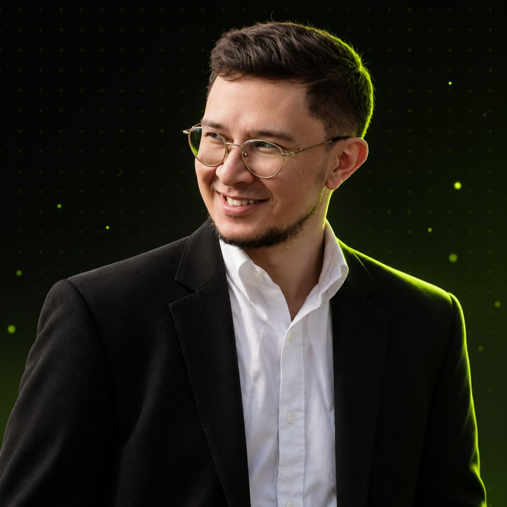

артурбуквы.рф
Я Артур, дизайнер с 14-летним опытом и кейсами для Альфа-Банка, МТС, Роснефти, СБИС, t2 и Фармленда.
3D, motion и key visual: CGI-ролики под ключ, 3D для мобильных игр, нейросети и автоматизация.